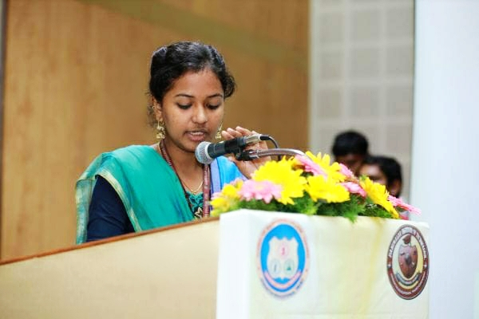

What the heart thinks, the tongue speaks. There are countless reasons to host an event, a meetup, a workshop, a conference.
If people really want to go, and really try all their lives, I think they will get in; for I don't believe there are any locks on that door, or any guards at the gate.
Let me show you all some of my works in this field.
